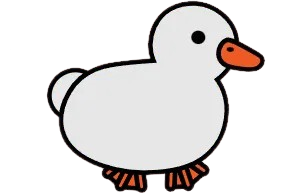

Pond LauncherPond Launcher puts your library on a surface you can move things around on. Drag games where you want them, stack them, make folders, and let the duck decide what to play tonight.
Download for Windows Free. Your Steam games show up on their own.Every launcher I used had the same grid of covers in the same order, and I never really looked at it. I wanted something that felt more like my own desk, where the games I play often are near the front and the rest are tucked behind them.
So I built this. It is a little odd on purpose. There is a duck. It is not for everyone, but if you like things that feel handmade, I think you will like it.
Thanks for stopping by.
Not a lot of menus. Mostly things you can touch.
Drag a game anywhere and the others step aside to make room. Let go between two games and it fits in exactly there. Hold a card on top of another for a second and they become a folder.
It sleeps late at night. It gets cheerful after a long session and a bit sad if you have not played in a week. It is not a score, just a small reminder that you exist outside the launcher.
When you close a game, a little box asks what you did. Write a line or skip it. Later you can scroll back through everything you played.
Spin the wheel. It picks a game, you press play, and nobody has to argue about it.
Warm in the morning, cooler in the evening, dark at night. Turn it on in Add-ons and you will not have to think about it.
A small bar appears while something is running, with a Stop button. It is quick, but it does not save your progress for you, so use it kindly.
Download the installer, run it, and your library is already there on the desk.
Download installer Windows 10 or 11. Steam is optional. The installer is not signed yet, so Windows may ask you to confirm it.